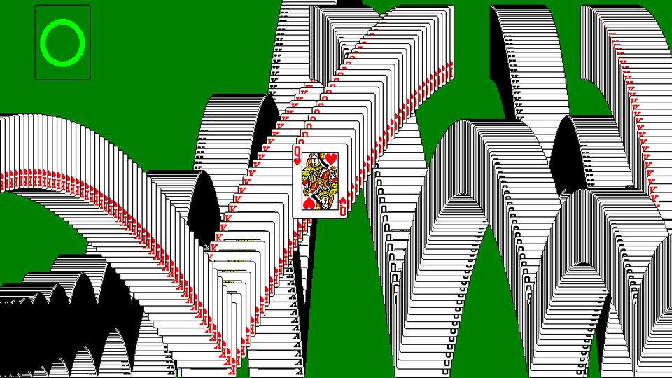
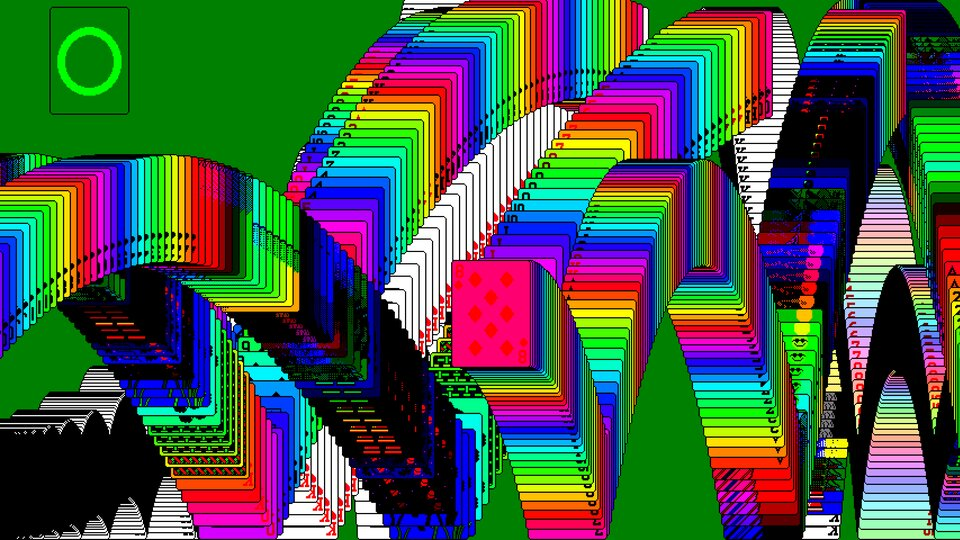
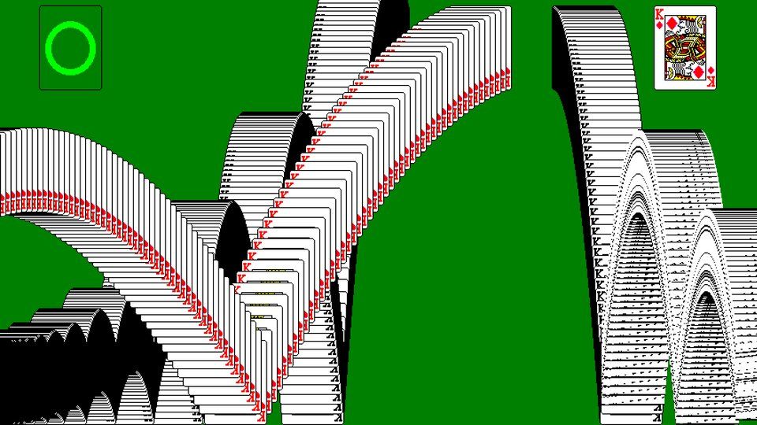
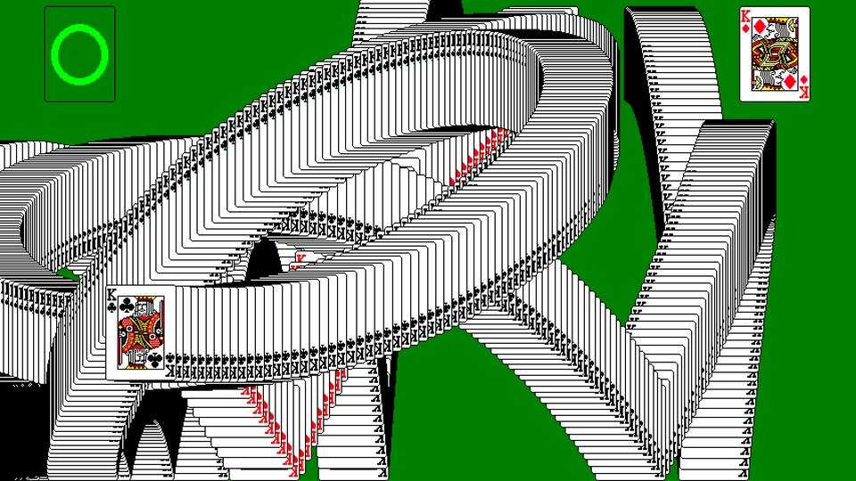
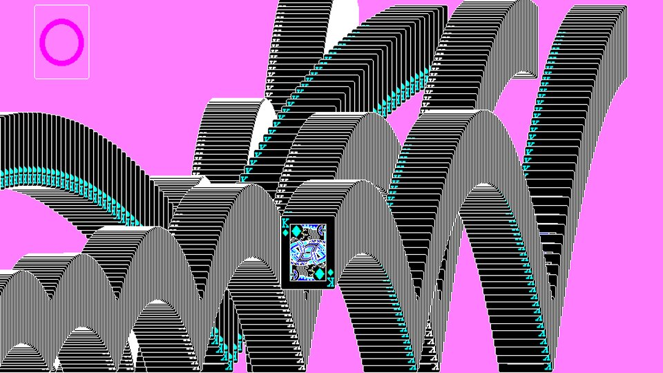
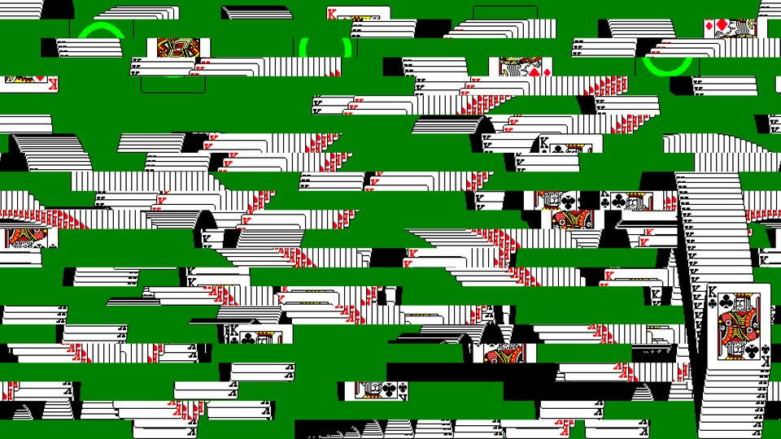
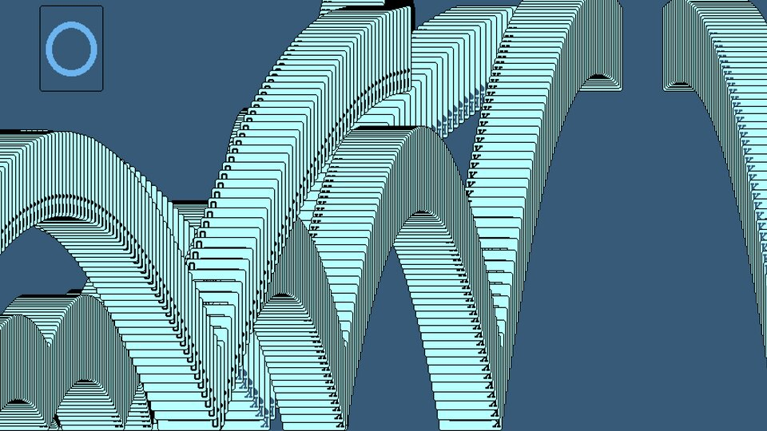

The Windows Solitaire win screen, faithful at first. After a minute or so it starts to go wrong, gets steadily worse, then reboots and does it again.







See every effect, how chaos builds up, and how effects stack →
Download Solitaire-Win.zip and unzip it.
It isn't notarised by Apple, so macOS will block it at first. Clear the download flag in Terminal:
xattr -dr com.apple.quarantine ~/Downloads/"Solitaire Win.saver"Or double-click it, and when macOS refuses, open System Settings → Privacy & Security and click Open Anyway.
Double-click Solitaire Win.saver and choose to install it.
Pick Solitaire Win in System Settings → Screen Saver. Options… sets how fast it breaks, how far, and which kinds of trouble are allowed.